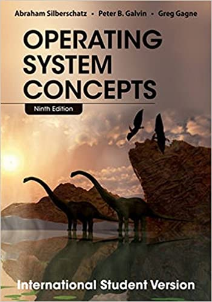
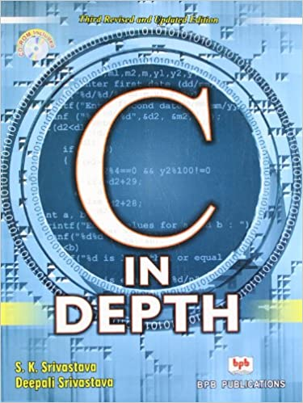
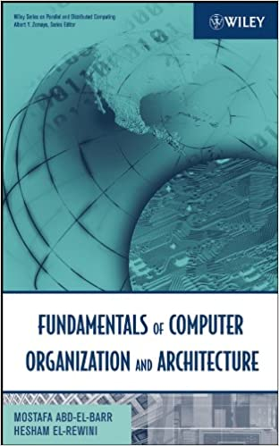

The ninth edition of Operating System Concepts continues to evolve to provide a solid theoretical
foundation for understanding operating systems. This edition has been updated with more extensive
coverage of the most current topics and applications, improved conceptual coverage and additional
content to bridge the gap between concepts and actual implementations. A new design allows for
easier navigation and enhances reader motivation. Additional end-of-chapter, exercises, review questions,
and programming exercises help to further reinforce important concepts. WileyPLUS, including a test bank,
self-check exercises, and a student solutions manual, is also part of the comprehensive support package
Chapters on project development and library creation, code optimization, assembly interactions,
and operations on bits may be helpful for further execution of the knowledge of programming.
Buy from Amazon | |
Download as a PDF

In the third edition of the book ‘C in depth’, the authors explain the basics of
the programming language while maintaining the integrity and clarity of the programs.
The book can be utilized by both beginners and advanced level programmers as a
self-evaluation and learning source.
The book begins with an introduction to the language and explains the elements,
input and output, and operator and expressions used in programming. Control statements,
functions, arrays, pointers, strings and files are covered next in successive chapters.
Every chapter has examples in the form of programming that are explained step-wise.
Five chapters have been added in the third edition, which includes chapters on Recursion
and Bitwise Manipulation.
Buy from Amazon | |
Download as a PDF

This book provides complete coverage of the subjects pertaining to
introductory courses in computer organization and architecture, including:
* Instruction set architecture and design
* Assembly language programming
* Computer arithmetic
* Processing unit design
* Memory system design
* Input-output design and organization
* Pipelining design techniques
* Reduced Instruction Set Computers (RISCs)
The authors, who share over 15 years of undergraduate and graduate level
instruction in computer architecture, provide real world applications,
examples of machines, case studies and practical experiences in each chapter.
Buy from Amazon | |
Download as a PDF
This book provides a view about the communication used in business and helps the students to develop effective communication skills.
Buy from Amazon | |
Download as a PDF
 Books Review
Books Review